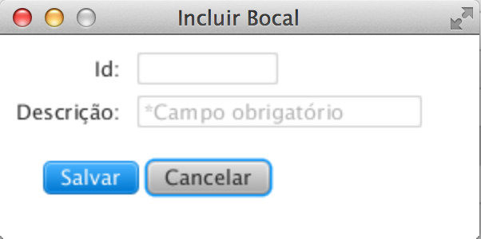
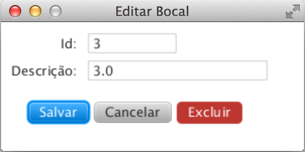

O que é e para que serve o cadastro de Bocal?
O cadastro de Bocal é a representação do bocal utilizado no aspersor, tem por finalidade realizar a associação no Ensaio e na combinação de bocais para geração da Tabela de Desempenho Aspersor Pingo. Encontra-se menu Início >> Bocais; Tela de Ensaio e Tela de Combinação de bocais;
Tela responsável pelo cadastro do Bocal:
Detalhamento dos campos:
Após o cadastro de um bocal é possível visualizar todos os bocais a partir do menu Início >> Bocais;
A listagem também é visualizada a partir do cadastro de ensaio e na tela de combinação de bocais.
Esta tela proporciona várias ações, são elas:
Para atualizar um bocal selecione-o na listagem e acione o botão , ele abrirá a tela abaixo, atualize as informações e acione o botão para armazenar as alterações.
Caso deseje excluir um bocal, selecione na listagem e acione o botão , e acione o botão . Só será possivel excluir um bocal se não estiver relacionado com nenhum ensaio ou combinação de bocais.
